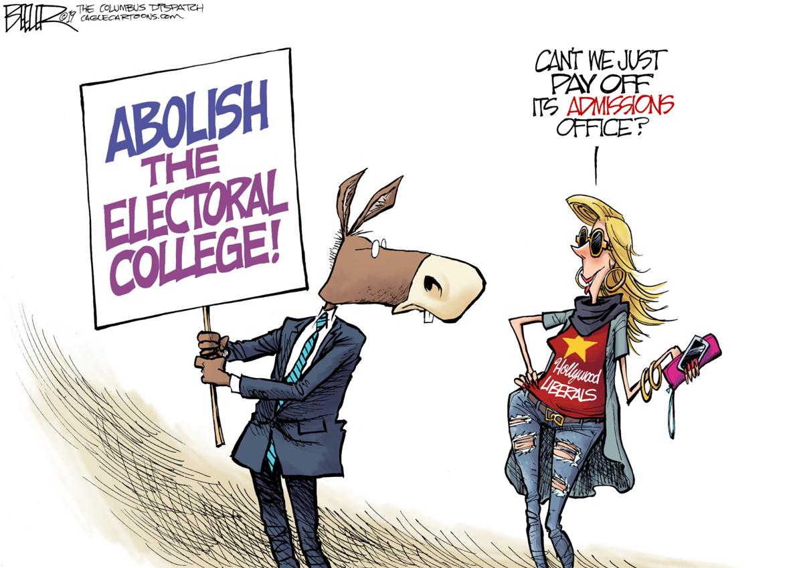
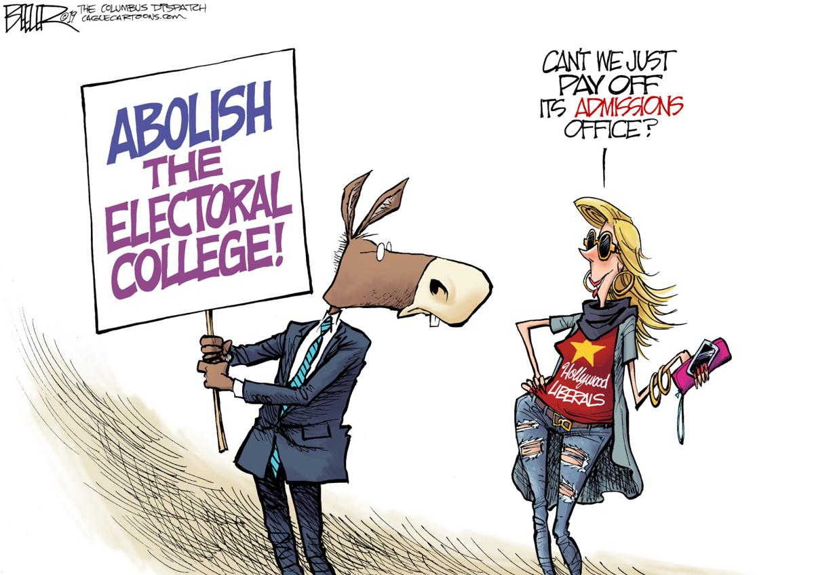

My Research Process
To start my search process I typed, “the electoral college” into google and found some basic information about what the electoral college is and why it is used. The first website that came up was a government website that explained the process that occurs every four years in order to elect a president. After a while of skimming through a couple of websites I managed to find an article about the pros and cons of the electoral college system. One of the first points made in this article is the divide the electoral college system causes since it favors our traditional two-party system way of government. This particular source helped me find out what the consequences are to using the electoral college. Many people believe that the electoral college “produces recurring political crises. And it threatens to delegitimize the entire political system by creating larger and larger splits” (Proulx 8) across the country. This started to give me an idea of the down sides of using the electoral college system.
The next source I found talked about all the reform that has already occurred in an effort to get rid of the electoral college. Many state legislatures over the past few years have seen a problem with the unfair representation that the electoral college gives certain people and have passed state laws to change this without a constitutional amendment. “As of 2017, ten states and the District of Columbia have adopted the National Popular Voter Interstate Compact” (Efforts to Amend and Abolish the US Electoral College System 5). This source also talked about the vast history of electoral college reform. Even at a federal level, “There have been at least 700 proposed amendments related to the electoral college in U.S. History” (Efforts to Amend and Abolish the US Electoral College System 3). I was surprised to find out that there have already been so many efforts to abolish the electoral college system. This furthered my inquiry to find out more about how the electoral college negatively affects certain Americans.
 
